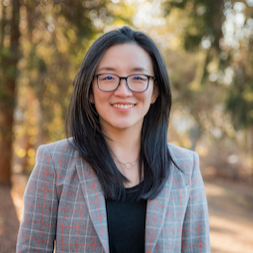

Overview
| Date | December 9, 2022 | Location | Virtual | Link | neurips.cc/virtual/2022/workshop/49959 |
To attend the workshop, a Virtual Only Pass registration or any form of physical registration (either Conference or Workshop or both) at NeurIPS 2022 following this link is needed.
While machine learning (ML) models have achieved great success in many applications, concerns have been raised about their potential security, privacy, fairness, transparency and ethics issues when applied to real-world applications. Irresponsibly applying machine learning to mission-critical and human-centric domains such as healthcare, education, and law can lead to serious misuse, inequity issues, negative economic and environmental impacts, and/or legal and ethical concerns.
To address these negative societal impacts of ML, researchers have looked into different principles and constraints to ensure trustworthy and socially responsible machine learning systems. This workshop makes the first attempt towards bridging the gap between security, privacy, fairness, ethics, game theory, and machine learning communities and aims to discuss the principles and experiences of developing trustworthy and socially responsible machine learning systems. The workshop also focuses on how future researchers and practitioners should prepare themselves for reducing the risks of unintended behaviors of sophisticated ML models.
This workshop aims to bring together researchers interested in the emerging and interdisciplinary field of trustworthy and socially responsible machine learning from a broad range of disciplines with different perspectives to this problem. We attempt to highlight recent related work from different communities, clarify the foundations of trustworthy machine learning, and chart out important directions for future work and cross-community collaborations. Topics of this workshop include but are not limited to:
- Novel methods for building more trustworthy machine learning models that prevent or alleviate negative societal impacts of existing ML methods
- New applications and settings where trustworthiness of machine learning plays an important role and how well existing techniques work under these settings
- Machine learning models with verifiable guarantees (such as robustness, fairness and privacy guarantees) to build trustworthiness
- Privacy-preserving machine learning approaches
- Theoretical understanding of trustworthy machine learning
- Explainable and interpretable AI
- Robust decision making under uncertainty
- Futuristic concerns about trustworthy machine learning
- Game-theoretic analysis for socially responsible machine learning systems
- Case studies and field research of the societal impacts of applying machine learning in mission-critical and human-centric tasks
In-person Meet-up in NYC
For participants of the TSRML workshop in the evening after its conclusion, on December 9 around 8:00pm ET, we will have an in-person meet-up in NYC.
The tentative venue is Peter McManus Cafe (a casual Irish-style pub), located at 152 7th Ave, New York, NY 10011.
Please make a note of your interest using this form so that we can communicate logistics and update to an appropriately sized venue, if needed. You can also direct any questions to Melissa Hall via the last option in the form. Looking forward to meeting you who are interested and active in this space!
Thanks to Melissa Hall for making this happen!
Featured Speakers
Ordered alphabetically by last name.
 |
 | ||
| Kamalika Chaudhuri University of California, San Diego |
Nika Haghtalab University of California, Berkeley |
Been Kim Google Brain |
Yi Ma University of California, Berkeley |
 |
 |
 |
|
| Aleksander Mądry Massachusetts Institute of Technology |
Marco Pavone Stanford University |
Dorsa Sadigh Stanford University |
Milind Tambe Harvard University |
Panelists
Ordered alphabetically by last name.
| Kamalika Chaudhuri University of California, San Diego |
Been Kim Google Brain |
Dorsa Sadigh Stanford University |
Paper Awards
Outstanding Paper Award
-
Controllable Attack and Improved Adversarial Training in Multi-Agent Reinforcement Learning
Xiangyu Liu; Souradip Chakraborty; Furong Huang -
Differentially Private Bias-Term only Fine-tuning of Foundation Models
Zhiqi Bu; Yu-Xiang Wang; Sheng Zha; George Karypis -
zPROBE: Zero Peek Robustness Checks for Federated Learning
Zahra Ghodsi; Mojan Javaheripi; Nojan Sheybani; Xinqiao Zhang; Ke Huang; Farinaz Koushanfar
Oral
-
Revisiting Robustness in Graph Machine Learning
Lukas Gosch; Daniel Sturm; Simon Geisler; Stephan Günnemann -
DensePure: Understanding Diffusion Models towards Adversarial Robustness
Zhongzhu Chen; Kun Jin; Jiongxiao Wang; Weili Nie; Mingyan Liu; Anima Anandkumar; Bo Li; Dawn Song -
TalkToModel: Explaining Machine Learning Models with Interactive Natural Language Conversations
Dylan Z Slack; Satyapriya Krishna; Himabindu Lakkaraju; Sameer Singh
Organizers
 |
||
| Huan Zhang Carnegie Mellon University |
Linyi Li University of Illinois Urbana-Champaign |
Chaowei Xiao Arizona State University & NVIDIA |
 |
 |
|
| Zico Kolter Carnegie Mellon University |
Anima Anandkumar California Institute of Technology & NVIDIA |
Bo Li University of Illinois Urbana-Champaign |